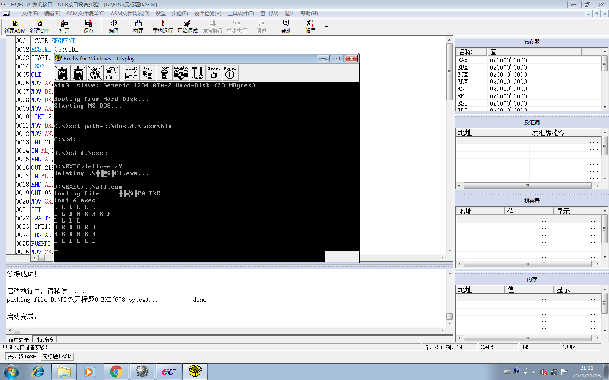

| # | 题目 | 分值 | 提交/评阅状态 |
|---|---|---|---|
| 1. |
8259-PC机内中断嵌套实验
要求：使用单次脉冲模拟两个中断源的中断产生，填写中断处理程序，体会中断嵌套的过程。 程序开始运行后，按如下要求操作： A、按下连接IRQ的单次脉冲按键，屏幕上会显示6个L，在屏幕上6次显示未结束之前，按下连接IRQ10的单次脉冲按键，观察现象； B、按下连接IRQ10的单次脉冲按键，屏幕上会显示6个R，在屏幕上6次显示未结束之前，按下连接IRQ的单次脉冲按键，观察现象。 根据实验验证，回答以下问题： 1）将屏幕显示结果以截图的方式写在实验作业中，并分析产生该现象的原因。 2）请用所给出的实验代码，详细解释中断嵌套是如何实现的，哪些代码起到了哪些功能。 |
0.00 |
初次提交时间: 2021-11-18 20:16:51 最后一次修改时间: 2021-12-09 19:33:12 1）  IRQ10的优先级比IRQ的优先级高。因为IRQ接在3号中断IRQ3，IRQ10接在10号中断IRQ10。优先级的排列次序为是0 级最高，依次为 1 级、8 级~15 级， 3 级~7 级。 2) CODE SEGMENT ASSUME CS:CODE START: .386 CLI ；关中断 MOV AX,CS MOV DS,AX MOV DX,OFFSET INT10 MOV AX,2572H INT 21H MOV DX,OFFSET INT3 MOV AX,250BH INT 21H IN AL,21H AND AL,0F3H OUT 21H,AL IN AL,0A1H AND AL,0FBH OUT 0A1H,AL MOV CX,6 STI WAIT: JMP WAIT INT10: CLI PUSHAD ;保存现场 PUSHFD MOV CX,6 NEXT10_1: MOV DX,52H MOV AH,02H INT 21H MOV DX,20H MOV AH,02H INT 21H CALL DELAY1 LOOP NEXT10_1 MOV DX,0DH MOV AH,02H INT 21H MOV DX,0AH MOV AH,02H INT 21H MOV AL,20H OUT 0A0H,AL OUT 20H,AL POPFD ;恢复现场 POPAD STI ;开中断 IRET ;回到请求中断的位置 INT3: CLI PUSHAD PUSHFD MOV CX,6 NEXT3_1: MOV DX,4CH MOV AH,02H INT 21H MOV DX,20H MOV AH,02H INT 21H CALL DELAY1 LOOP NEXT3_1 MOV DX,0DH MOV AH,02H INT 21H MOV DX,0AH MOV AH,02H INT 21H MOV AL,20H OUT 20H,AL OUT 0A0H,AL POPFD POPAD STI IRET DELAY1 PROC PUSHAD PUSHFD MOV CX,0FH DELAY_LOOP1: MOV BX,0FFFFH DELAY_LOOP2: DEC BX NOP JNZ DELAY_LOOP2 LOOP DELAY_LOOP1 POPFD POPAD RET DELAY1 ENDP CODE ENDS END START 中断嵌套是在执行一个中断前先关中断，将现场保存起来，之后执行中断，执行结束后开中断并恢复现场。 代码实现功能见代码注释。 |
| 2. |
8259-扩展多中断应用实验
要求：采用查询方式，应用实验箱提供的8259中断源，向PC机提交中断请求。拨动开关发起请求一次中断，屏幕上显示相应的中断请求号。 根据实验设计及运行结果，回答以下问题： 1）将程序源代码中所划横线的位置(1)- (13)个空所填内容写在实验作业中（无需附所有代码），并根据所学8259的工作原理，对每个填空详细分析为什么要这么填。 （1） （2） （3） （4） （5） （6） （7） （8） （9） （10） （11） （12） （13） |
0.00 |
初次提交时间: 2021-11-18 21:12:34 最后一次修改时间: 2021-12-09 20:28:29 （1）2B0H ;ICW1偶地址端口 （2）2B1H ;ICW2奇地址端口 （3）2B1H ;ICW3奇地址端口 （4）2B1H ;ICW2奇地址端口 （5）2B0H ;OCW3偶地址端口 （6）13H ;00010011B边沿触发、单片、需要ICW4对应D3=0，D1=D0=0 （7）O8259_1 ;初始化屏蔽字用OCW1 （8）00H ;打开屏蔽位0表示打开 （9）O8259_3 ;查询字命令用OCW3 （10）6CH ;01101100B读IRR寄存器 （11）O8259_2 ;中断结束命令OCW2 （12）MOV AL,20H ;00100000B，D5=1中断 （13）OUT DX,AL;中断响应 |